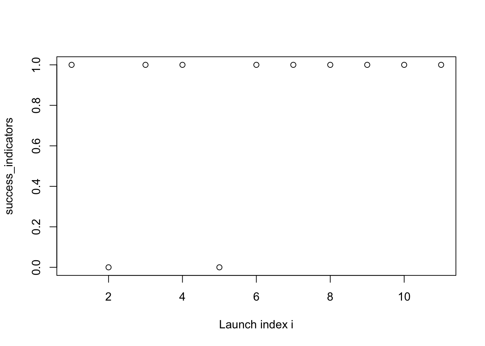
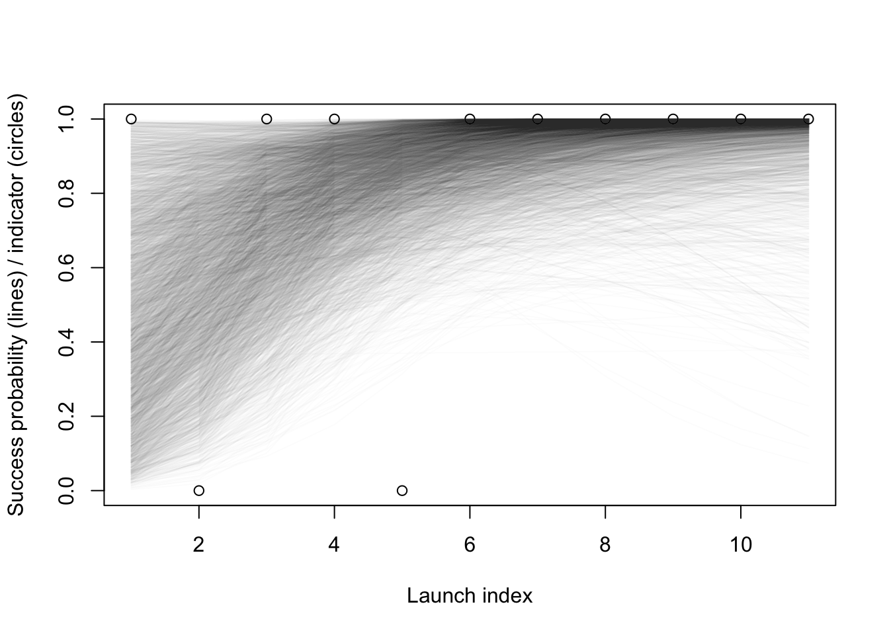

suppressPackageStartupMessages(require(rstan))
suppressPackageStartupMessages(require(ggplot2))
suppressPackageStartupMessages(require(dplyr))
set.seed(1)
df = read.csv(url("https://raw.githubusercontent.com/UBC-Stat-ML/web447/main/data/launches.csv")) %>% filter(LV.Type == "Ariane 1")
success_indicators = df$Suc_bin
rmarkdown::paged_table(df)Stan: hands on
Outline
We revisit the time-varying Ariane 1 rocket failure probability model to practice the Stan syntax introduced this week.
plot(success_indicators, xlab = "Launch index i")
Model
Recall the model we discussed previously:
\[\begin{align*} \text{slope} &\sim \mathcal{N}(0, 1) \\ \text{intercept} &\sim \mathcal{N}(0, 1) \\ \theta(i) &= \text{logistic}(\text{slope} \cdot i + \text{intercept}) \\ y_i &\sim {\mathrm{Bern}}(\theta(i)) \end{align*}\]
…which you also implemented in simPPLe as part of exercise 4:
logistic_regression = function() {
intercept = simulate(Norm(0, 1))
slope = simulate(Norm(0, 1))
for (i in seq_along(success_indicators)){
success_probability = plogis(intercept + i*slope)
observe(success_indicators[i], Bern(success_probability))
}
return(c(intercept, slope))
}Translation into Stan
Question 1: use the template below to translate the above model into Stan. Set the seed to 1, run 10000 MCMC iterations, and report the posterior mean of the slope parameter.
data {
int N;
array[N] int y;
}
parameters {
real slope;
real intercept;
}
transformed parameters {
vector[N] mu =
inv_logit(intercept + slope*linspaced_vector(N, 1, N));
}
model {
slope ~ normal(0, 10);
intercept ~ normal(0, 10);
y ~ bernoulli(mu);
}fit = sampling(
logistic,
data = list(
y = success_indicators,
N = length(success_indicators)
),
chains = 1,
iter = 10000
)
SAMPLING FOR MODEL 'anon_model' NOW (CHAIN 1).
Chain 1:
Chain 1: Gradient evaluation took 1.5e-05 seconds
Chain 1: 1000 transitions using 10 leapfrog steps per transition would take 0.15 seconds.
Chain 1: Adjust your expectations accordingly!
Chain 1:
Chain 1:
Chain 1: Iteration: 1 / 10000 [ 0%] (Warmup)
Chain 1: Iteration: 1000 / 10000 [ 10%] (Warmup)
Chain 1: Iteration: 2000 / 10000 [ 20%] (Warmup)
Chain 1: Iteration: 3000 / 10000 [ 30%] (Warmup)
Chain 1: Iteration: 4000 / 10000 [ 40%] (Warmup)
Chain 1: Iteration: 5000 / 10000 [ 50%] (Warmup)
Chain 1: Iteration: 5001 / 10000 [ 50%] (Sampling)
Chain 1: Iteration: 6000 / 10000 [ 60%] (Sampling)
Chain 1: Iteration: 7000 / 10000 [ 70%] (Sampling)
Chain 1: Iteration: 8000 / 10000 [ 80%] (Sampling)
Chain 1: Iteration: 9000 / 10000 [ 90%] (Sampling)
Chain 1: Iteration: 10000 / 10000 [100%] (Sampling)
Chain 1:
Chain 1: Elapsed Time: 0.046 seconds (Warm-up)
Chain 1: 0.05 seconds (Sampling)
Chain 1: 0.096 seconds (Total)
Chain 1: fitInference for Stan model: anon_model.
1 chains, each with iter=10000; warmup=5000; thin=1;
post-warmup draws per chain=5000, total post-warmup draws=5000.
mean se_mean sd 2.5% 25% 50% 75% 97.5% n_eff Rhat
slope 0.55 0.01 0.41 -0.15 0.27 0.51 0.79 1.47 1133 1
intercept -0.60 0.05 1.82 -4.15 -1.78 -0.61 0.55 3.20 1180 1
mu[1] 0.49 0.01 0.27 0.05 0.26 0.48 0.71 0.96 1388 1
mu[2] 0.59 0.01 0.23 0.14 0.42 0.61 0.78 0.96 1647 1
mu[3] 0.70 0.00 0.19 0.29 0.58 0.73 0.85 0.97 2265 1
mu[4] 0.79 0.00 0.15 0.44 0.71 0.82 0.91 0.98 3247 1
mu[5] 0.85 0.00 0.12 0.56 0.79 0.88 0.94 0.99 3840 1
mu[6] 0.89 0.00 0.10 0.63 0.84 0.92 0.97 1.00 3473 1
mu[7] 0.92 0.00 0.09 0.67 0.88 0.95 0.98 1.00 2748 1
mu[8] 0.94 0.00 0.09 0.69 0.91 0.97 0.99 1.00 2182 1
mu[9] 0.95 0.00 0.08 0.69 0.93 0.98 1.00 1.00 1816 1
mu[10] 0.95 0.00 0.09 0.68 0.95 0.99 1.00 1.00 1576 1
mu[11] 0.96 0.00 0.09 0.67 0.96 0.99 1.00 1.00 1424 1
lp__ -5.54 0.03 1.12 -8.54 -6.01 -5.21 -4.73 -4.41 1210 1
Samples were drawn using NUTS(diag_e) at Wed Mar 6 21:17:48 2024.
For each parameter, n_eff is a crude measure of effective sample size,
and Rhat is the potential scale reduction factor on split chains (at
convergence, Rhat=1).We can extract samples as follows:
samples = extract(fit)$mu
data = success_indicators
n_samples = nrow(samples)xs = 1:length(data)
plot(xs, data,
xlab = "Launch index",
ylab = "Success probability (lines) / indicator (circles)")
for (i in 1:n_samples) {
lines(xs, samples[i,], col = rgb(red = 0, green = 0, blue = 0, alpha = 0.01))
}
Using the posterior
Question 2: compute a 95% credible interval on the slope parameter.
Hint
Use println on the fit object.
Question 3: translate “your updated belief that the Ariane 1 rockets were improving” into a mathematical expression.
Question 4: estimate the numerical value of the expression in the last question.